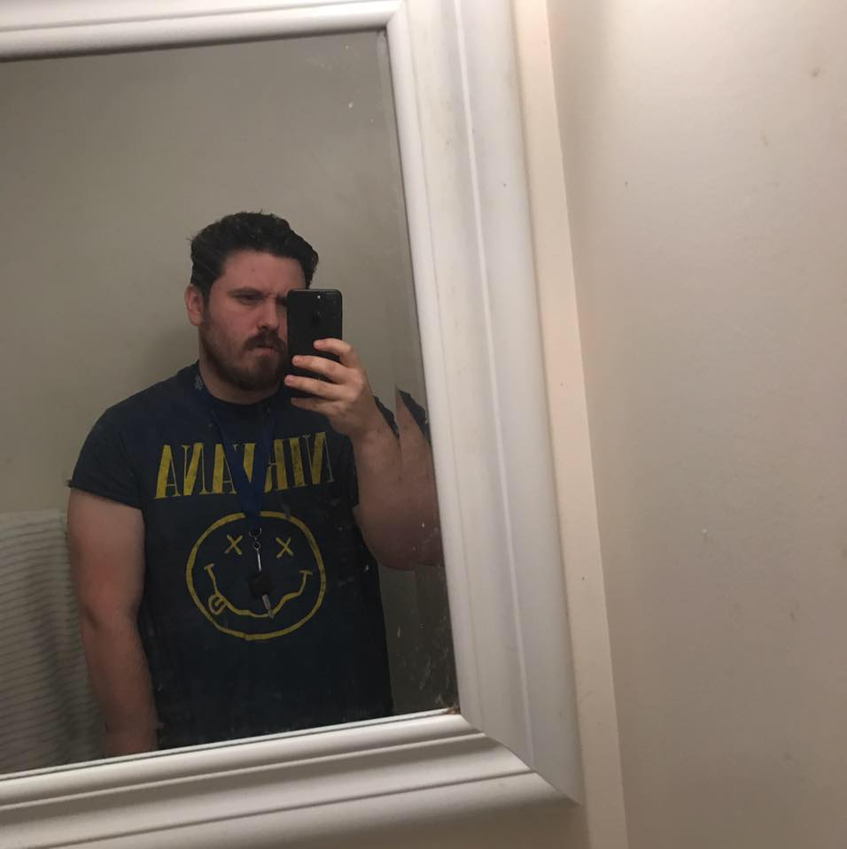

About Me
I'm a web designer residing in Edison, NJ. I was born in New Brunswick, NJ in 1986. My first memory is eating poptarts and the band whitesnake playing on my tv, so I learned to control my hair at a young age. I love to create, and my hobbies include writing and music. I like to think outside of the box, so that I can better understand the box. I'm naturally curious, and I'm always looking to improve, even when things are excellent. On the developer side, I'm particularly interested in Ruby and C++ but my skill set includes HTML, CSS, JavaScript, Node.js, MongoDB, MySQL etc. On the front end I particularly enjoy CSS and styling. I'm very flexible and want to create the best product for your business, whatever it requires of me.
Most of my life I have done manual labor jobs, and later I got into the limo industry until I decided to get into web development in 2016. I started learning Ruby on my own and then decided I should go to school to get the remainder of skills needed to succeed in the field, so I enrolled to the Rutgers Coding Bootcamp.